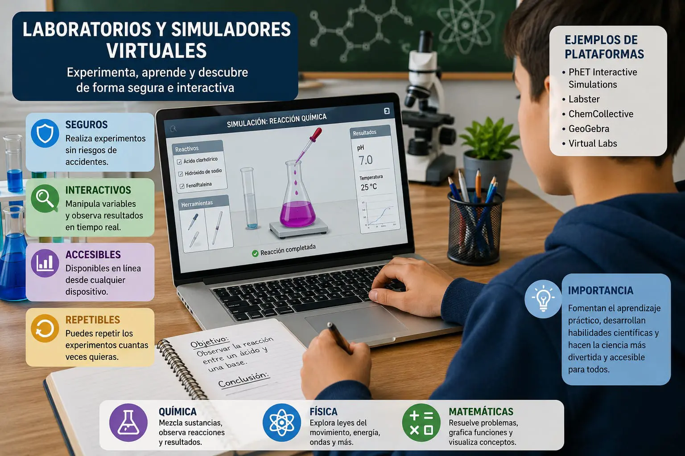

Laboratorios y simuladores virtuales
Los laboratorios y simuladores virtuales son herramientas digitales que permiten a los estudiantes realizar prácticas y experimentos mediante un computador, una tableta o un teléfono con acceso a internet. Estas plataformas recrean situaciones reales para que los usuarios puedan aprender de manera interactiva sin necesidad de estar en un laboratorio físico. Gracias a ellas, es posible desarrollar habilidades prácticas de forma segura y comprender mejor los conceptos vistos en clase.
Su principal objetivo es facilitar el aprendizaje mediante la experimentación. En asignaturas como física, química, biología, matemáticas e informática, los estudiantes pueden observar fenómenos, modificar variables y analizar los resultados obtenidos. Esto hace que el proceso de aprendizaje sea más dinámico y ayuda a reforzar los conocimientos adquiridos durante las clases teóricas.
Una de las mayores ventajas de los laboratorios virtuales es que reducen los costos relacionados con la compra de materiales y equipos. En muchos casos, las instituciones educativas no cuentan con laboratorios completamente equipados, por lo que estas plataformas representan una excelente alternativa para que todos los estudiantes tengan acceso a prácticas de calidad sin poner en riesgo su seguridad.
Además de ser económicos, los simuladores virtuales permiten repetir los experimentos las veces que sean necesarias. Si un estudiante comete un error, puede volver a realizar la actividad hasta comprender el procedimiento correctamente. Esto fortalece el aprendizaje autónomo y aumenta la confianza al momento de aplicar los conocimientos en situaciones reales.
Otra característica importante es que ofrecen un entorno seguro para realizar experimentos que podrían resultar peligrosos en un laboratorio tradicional. Algunas prácticas implican el uso de sustancias químicas, equipos eléctricos o materiales delicados; sin embargo, en un simulador estos riesgos desaparecen, permitiendo que el estudiante aprenda sin exponerse a accidentes.
Estas herramientas también favorecen la educación a distancia y el aprendizaje flexible. Los estudiantes pueden acceder a las plataformas desde cualquier lugar y en cualquier momento, siempre que dispongan de un dispositivo con conexión a internet. Esto facilita el estudio fuera del aula y permite que cada persona avance a su propio ritmo.
Entre los laboratorios y simuladores virtuales más utilizados se encuentran PhET Interactive Simulations, Labster, ChemCollective, Tinkercad y GeoGebra. Estas plataformas ofrecen actividades interactivas que ayudan a comprender mejor diferentes temas y son utilizadas por instituciones educativas de todo el mundo para complementar el proceso de enseñanza.
En conclusión, los laboratorios y simuladores virtuales se han convertido en un recurso muy importante para la educación actual. Su facilidad de acceso, la posibilidad de practicar sin riesgos, el ahorro de recursos y la oportunidad de repetir los ejercicios contribuyen a mejorar el aprendizaje. Aunque no reemplazan completamente las prácticas presenciales, son un excelente complemento para fortalecer los conocimientos y desarrollar habilidades de manera efectiva.
